I gave my first science talk at school in Grade 5, and I have been explaining things to people ever since: first science, now mostly AI. Most of what I build starts with a question someone near me asked. Can a wheelchair user get along this street? Can a shop owner use AI in Gujarati? Do AI models give Indian users equally good answers in their own language?
Through my talks, mentoring and initiatives I have reached more than 2,500 young people. I have learned that leadership is not defined by age, but by action.
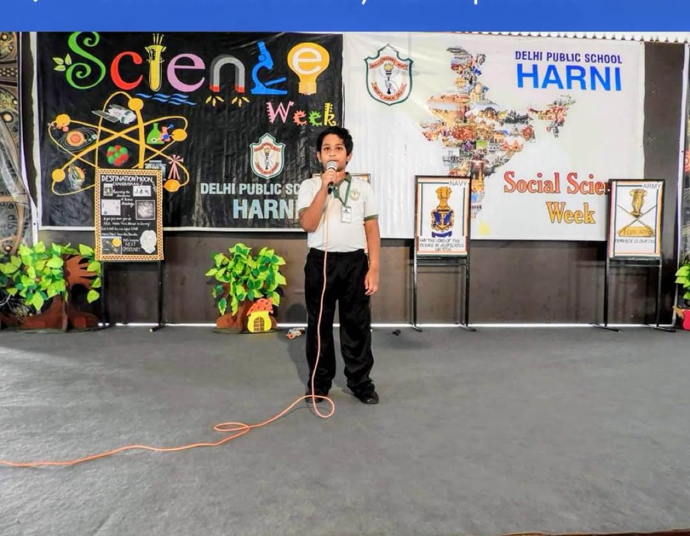
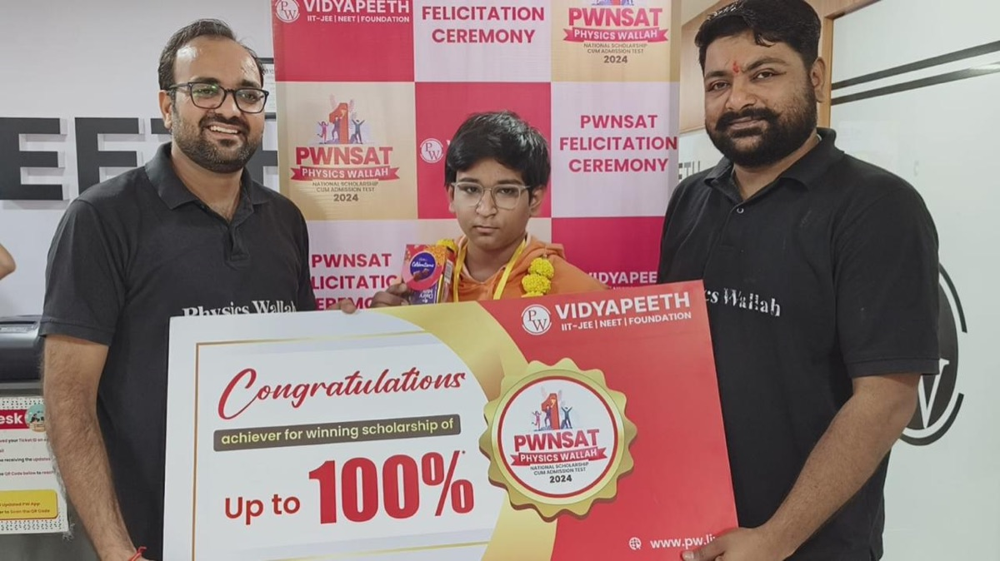
6 yearsAcademic Laureate
3open projects on GitHub
~200students mentored in robotics & AI
~50local business owners helped with AI
2,500+young people reached through talks, mentoring & initiatives
Why
Why I do this
I believe serving a community works in two directions. It gives people the skills and confidence to help themselves, and it makes life better for everyone it touches, including the person doing the serving.
I want to bring together people from very different backgrounds, many of them still working out who they are, and mix ideas from different subjects into one close community that changes things for the better. Above all I want to help close the gaps that hold underprivileged people back. My long-term hope is to help build a world that has never existed before: a fairer one than any we have had.
At university I want to use every resource and every person around me to keep turning ideas into action, and to take this work far beyond Vadodara.
The rest of this page follows how that grew: from learning and explaining, to noticing the gaps around me, to serving people face to face, to building tools that reach more people than I ever could in person.
01
Chapter 1 · Learning
Academics
Delhi Public School Harni, Vadodara.
Academic Laureate, six years in a row
Laureate and Academic Excellence awards · Delhi Public School Harni
I have been named my school's Academic Laureate six years in a row, from Class 5 to Class 10. Each of those years I topped my class with the highest grades in every subject.
100% scholarship for Class 11 and 12, PWNSAT 2024
Physics Wallah National Scholarship cum Admission Test · Ranker's certificate
In 2024 I took Physics Wallah's National Scholarship cum Admission Test (PWNSAT). My result earned me a ranker's certificate at the felicitation ceremony and a 100% tuition scholarship for JEE preparation in Class 11 and 12 at PW Vidyapeeth.
PWNSAT 2024 scholarship, felicitation ceremony
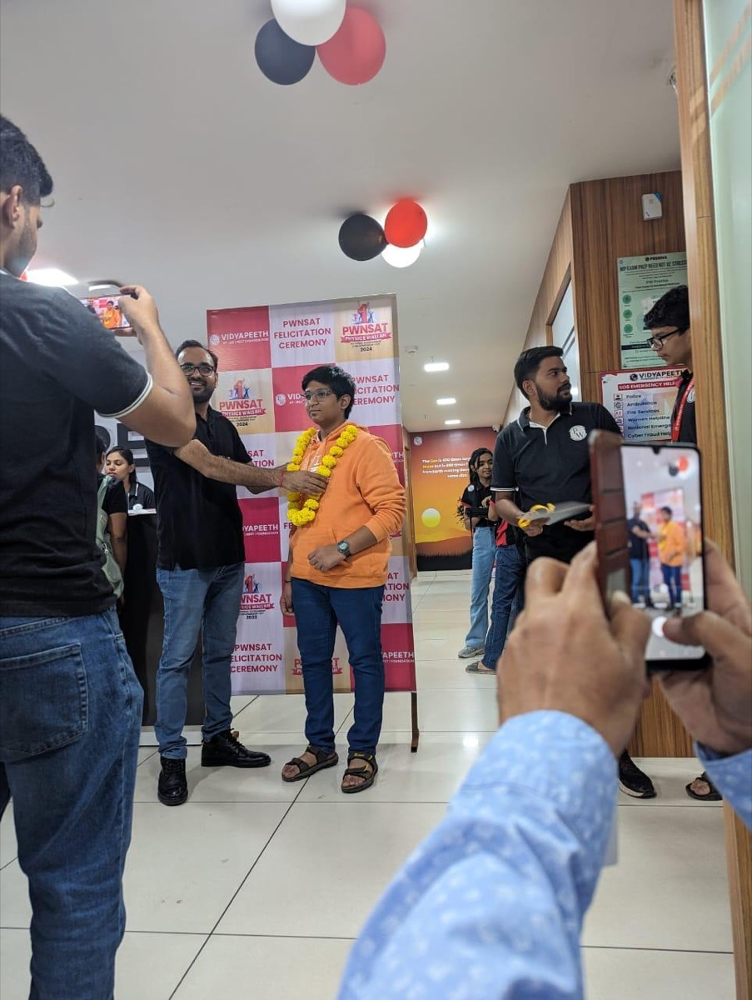
Garlanded at the ceremony
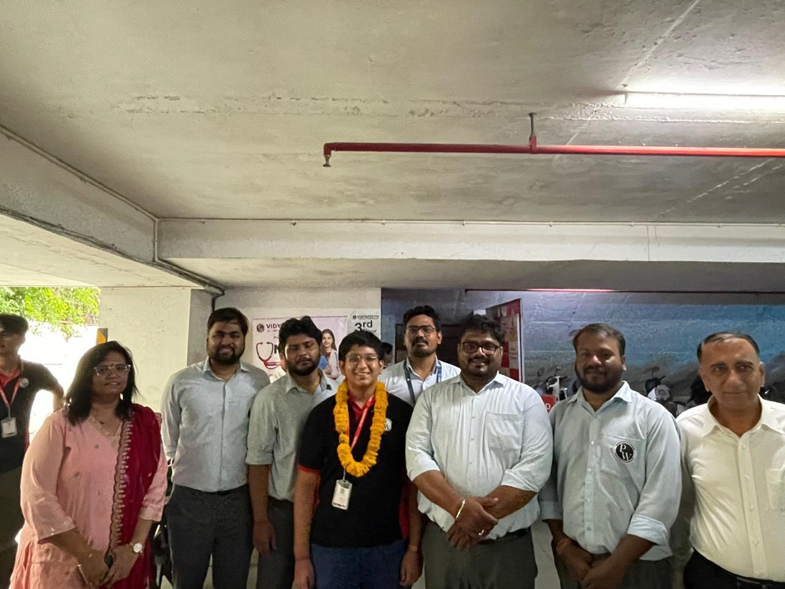
With PW Vidyapeeth staff
Inter-School Science Quiz, MGM School, Baroda
Certificate · Mar Gregorios Rolling Trophy
I received a certificate at MGM School's inter-school science quiz for the Mar Gregorios Rolling Trophy.
Explaining something to others is how I find out whether I really understand it. It is also how I first learned to listen to an audience.
Science
Health
Adoption of AI
Ethics & trust in AI
Model UN
Speaking at Science Week, Delhi Public School Harni, Vadodara
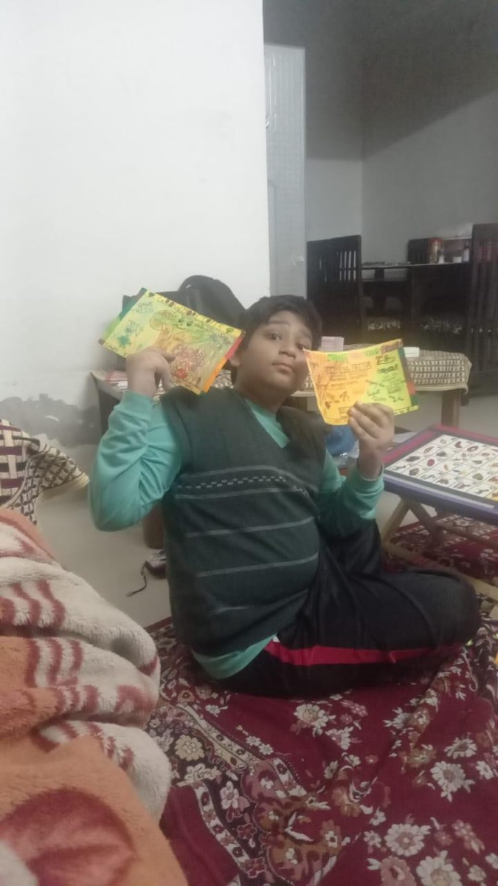
Hand-made awareness posters
Public talks
Since Grade 5 · school, inter-school and public audiences
My first talk was on science, in Grade 5. Since then I have spoken at school assemblies, science weeks, inter-school events and public gatherings. My talks have grown around four themes:
Science: taking ideas from the classroom and showing how they explain the world around us.
Health: raising awareness of simple, everyday choices that keep people and families healthy.
Adoption of AI: helping ordinary people, families and small business owners understand AI well enough to start using it in their own lives and work.
Ethics and trust in AI: when AI can be trusted, what safety, fairness and accountability mean, and why people deserve to know how a system makes its decisions.
Each talk taught me something about my audience. A room of students, a group of parents and a shop owner need the same idea explained in completely different ways, and learning to do that is what led to much of my later work.
Trust and safety in AI and robotics
Robotics and AI fair · explaining to visitors
At a robotics and AI fair I explained to visitors why people can only trust AI and robots if they are safe, reliable and secure against hacking. My main point was that we cannot wait for things to go wrong and then fix them. Safety has to be built in from the start and checked in ways others can verify.
Robots make this more urgent than chatbots, because a robot acts in the physical world and a mistake can hurt someone. That is why robots need thorough testing, algorithms whose decisions can be explained, and clear ethical rules about who is accountable when something goes wrong.
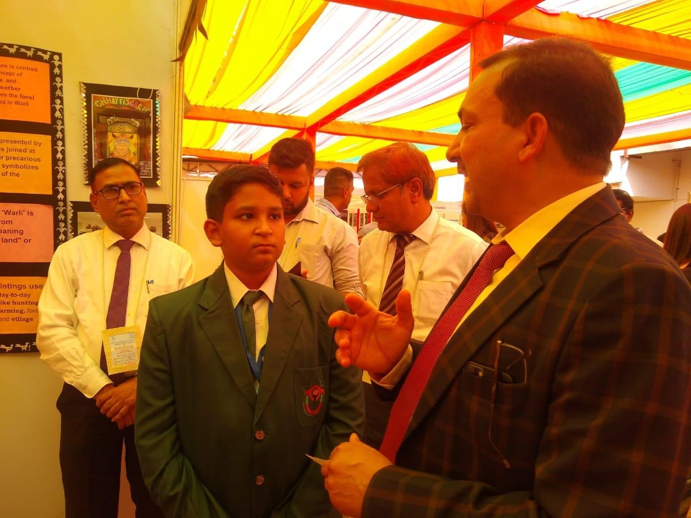
Talking with visitors at the robotics and AI fair
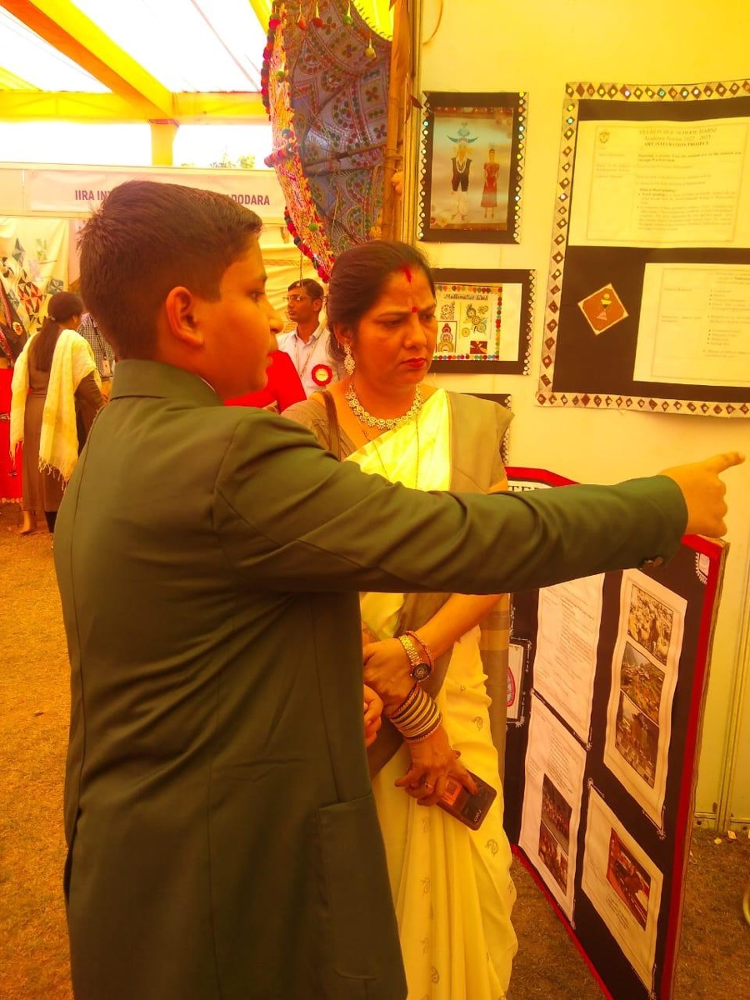
Explaining at the display boards
Model United Nations
Conferences · delegate
At Model United Nations conferences I research a country's position and argue it in committee. MUN taught me to see one problem through many different eyes, which is the same skill I need when I try to bring different kinds of people together.
03
Chapter 3 · Serving
Serving the community
This is where I work face to face with people in vulnerable situations: autistic children and people with disabilities, children from underprivileged families, and families living by the roadside. Seeing the gaps came first. Acting on them came next.
Seeing the gaps: from the Autism Centre to student-led events
Volunteering · awareness workshops · organizing
Volunteering at an autism centre changed what I notice. I saw how little awareness there is about disability, and how much accessibility is missing, both for autistic children and for people with physical disabilities.
I started by writing notes on what I saw, then made posters. Next I talked with psychologists and teachers so I understood it properly. That led to workshops where parents spoke openly about the silence and stigma their families face. From there I began organizing student-led community events, so more young people could be part of the conversation.
I founded Project Empathos, my own social project. It collects resources and materials and passes them on to humanitarian aid organizations.
DevDots: teaching Python in a public school
Volunteer teacher · public school
Through DevDots, a project that teaches Python to children at a public school, I help young students take their first steps in programming.
Weekend classes for children from underprivileged families
Every weekend · with a group of fellow students
Every weekend I join a group of fellow students to teach children from underprivileged families near us the basics of science and mathematics.
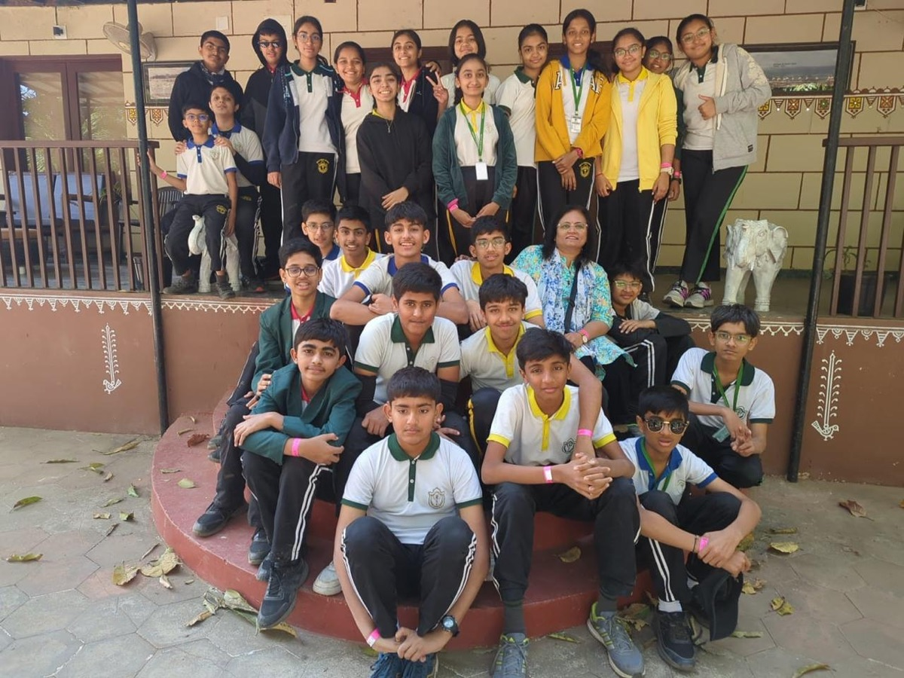
With fellow students
Food and hygiene help for families in need
Weekends · roadside settlements near Vadodara
On weekends I also visit poor families living in roadside settlements near us. I bring healthy food such as fruit for the children and their families, and help with cleaning and basic hygiene.
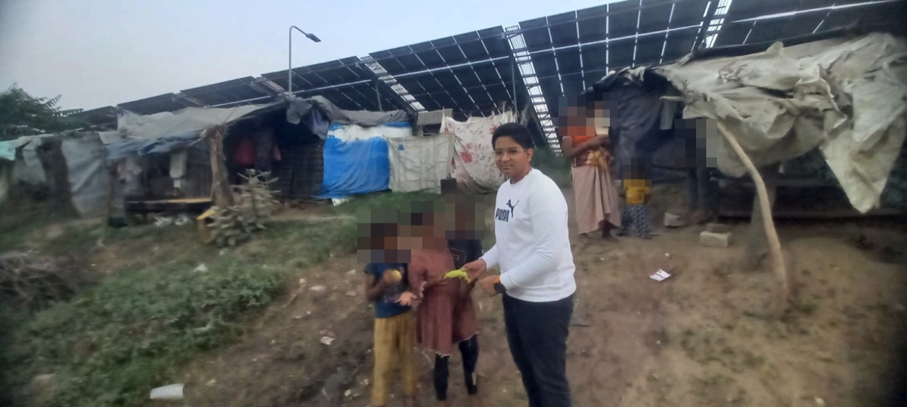
Handing out fruit to children
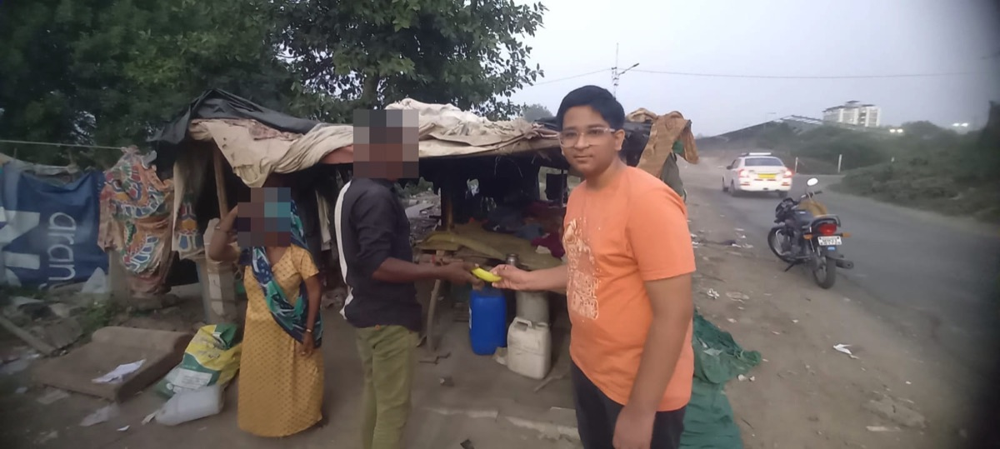
Visiting a family by the road
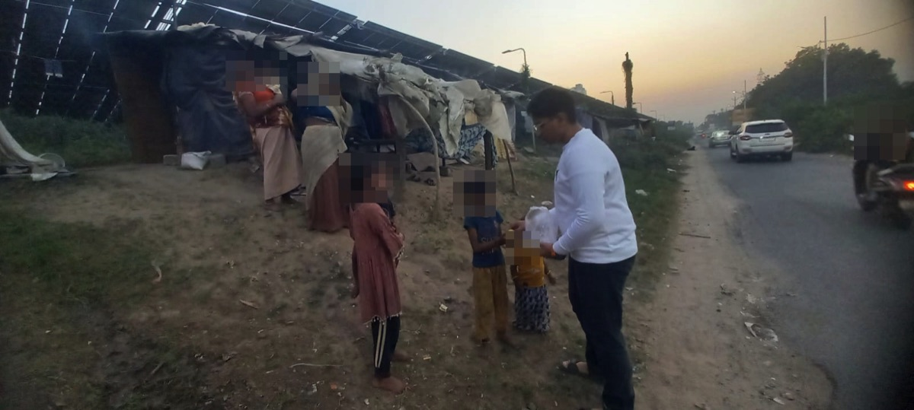
At dusk, at a settlement beside the road
Faces of the families are blurred to protect their privacy.
The student group I started: community events and awareness drives
Founder · a student-led group that works like a local chapter
I started a student group that works like a local chapter, so that students who want to help have a way to do it together. As a group we travel to community events and local meetups about technology. We talk with people about what AI can do for problems in their own area, from sustainable development to everyday public services. We use quizzes, contests and awareness campaigns so that people who rarely use technology can join in too, not just those who already do.
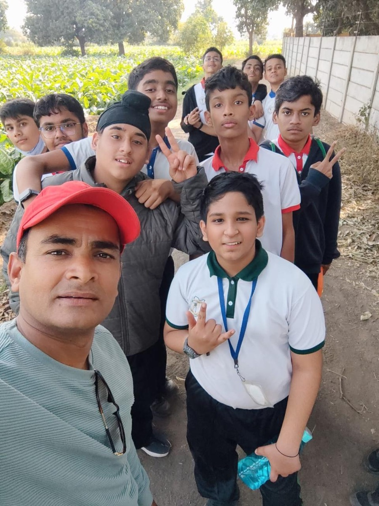
Our group on the way to community service
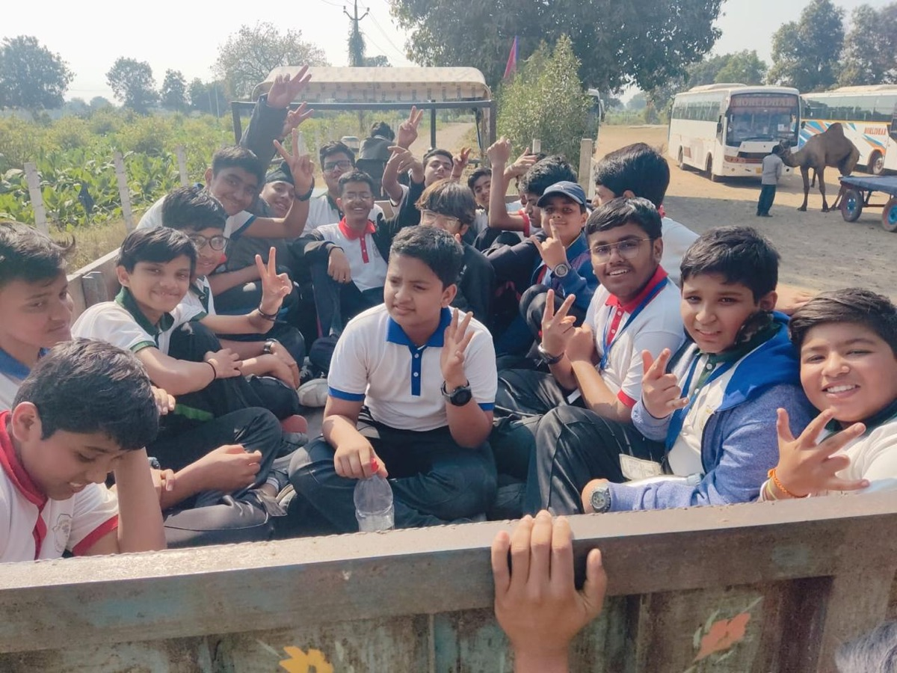
The student group I started, on the way to community service
04
Chapter 4 · Building
Building with technology
I can only sit down with so many people in person. Technology lets the same help reach people I will never meet, so I build tools and share everything openly: the code, the data and the write-ups.
Vadodara Access Map
Open community map · started October 2026
What I saw at the autism centre made me look at my own city differently. This is an open map of the barriers that make Vadodara's streets hard to use for people with limited mobility: broken footpaths, missing ramps, blocked crossings. It combines OpenStreetMap data, my own survey photos, AI scans of public street-level imagery (always labelled as AI) and reports from residents. Every week the model learns from the residents' votes.
The survey so far: I have photographed and pinned 11 barriers myself, such as broken ramps, high kerbs and blocked footpaths. An AI street scan has checked 721 public street photos for whether a usable footpath is there, and every AI result is marked so residents can check it. Anyone in Vadodara can add a barrier they find.
I wrote up the findings as a Status Note on Pedestrian Accessibility in Vadodara (October 2026). It sets the survey and the AI scan next to the RPwD Act, the Supreme Court's 2024 Rajive Raturi judgment and national transport data, and ends with recommendations for the city.
AI for local business owners, and the AI Explainers guide
In person since 2025 · 54-part guide published October 2026
Since 2025 I have sat down with about 50 local business owners in Vadodara to explain what AI is and how they could use it in their own work. I explain it in the language they think in, not in English. This help spread by word of mouth and was never formally recorded, so the number is an honest estimate.
Their questions became a plain-language guide to AI for shop owners and families, in Gujarati, Marathi and English, with an infographic, a real-life example and common mistakes in every part.
Language and Script Gaps in Local Language Models for Indian Users
Research audit · v1.0 released 23 October 2026
Explaining AI in Gujarati and Marathi made me ask whether AI itself treats those languages fairly. Do AI models that run on your own laptop answer an Indian user as well in Marathi or Hinglish as they do in English? I ran five open-weight models (Gemma 3 12B, Qwen3 8B, Llama 3.1 8B, gpt-oss 20B and Sarvam-30B) fully offline on one laptop. I asked each one the same Belebele and Global-MMLU questions in English, in 13 Indian languages, in native and romanized script, and in synthetic Indian English and Hinglish.
I also tested two fixes: converting romanized text to native script, and translating to English first. All 76,400 model answers are released with the code.
I have mentored about 200 students in robotics and in adding AI to their own projects.
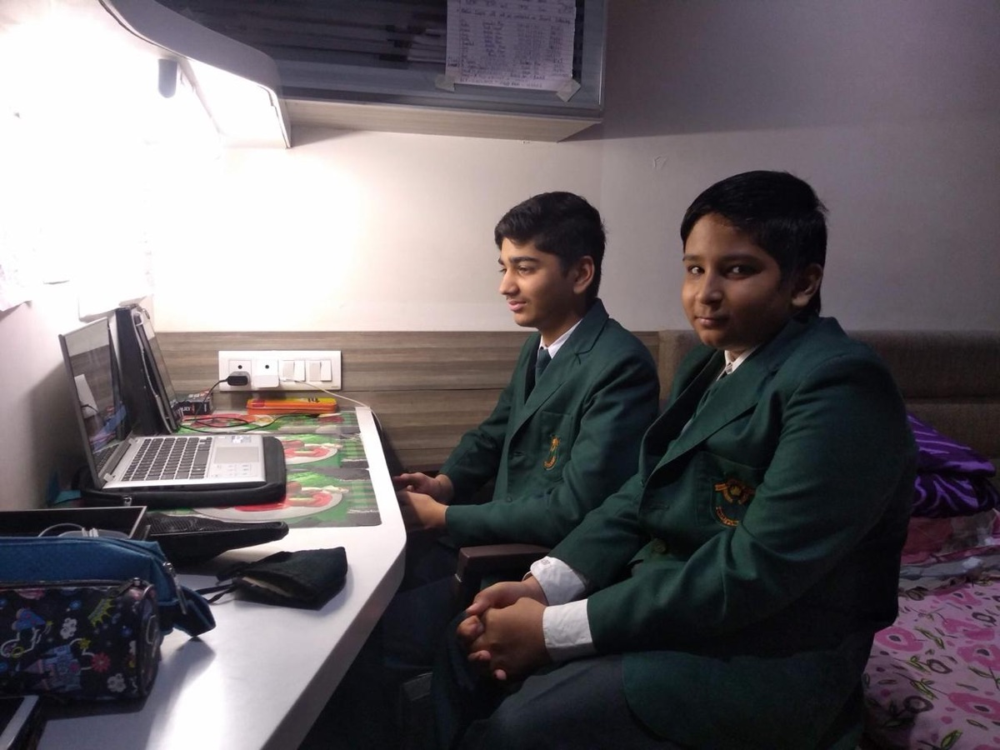
At the laptop with another student
Vadodara Hackathon 2.0, part of Vadodara Innofest 3.0
Participant · 2025 · Vadodara
In 2025 I took part in Vadodara Hackathon 2.0 as a participant. It is a student hackathon where teams work on problems people face in daily life. The event is meant to build a habit of problem-solving and product thinking, not just coding.
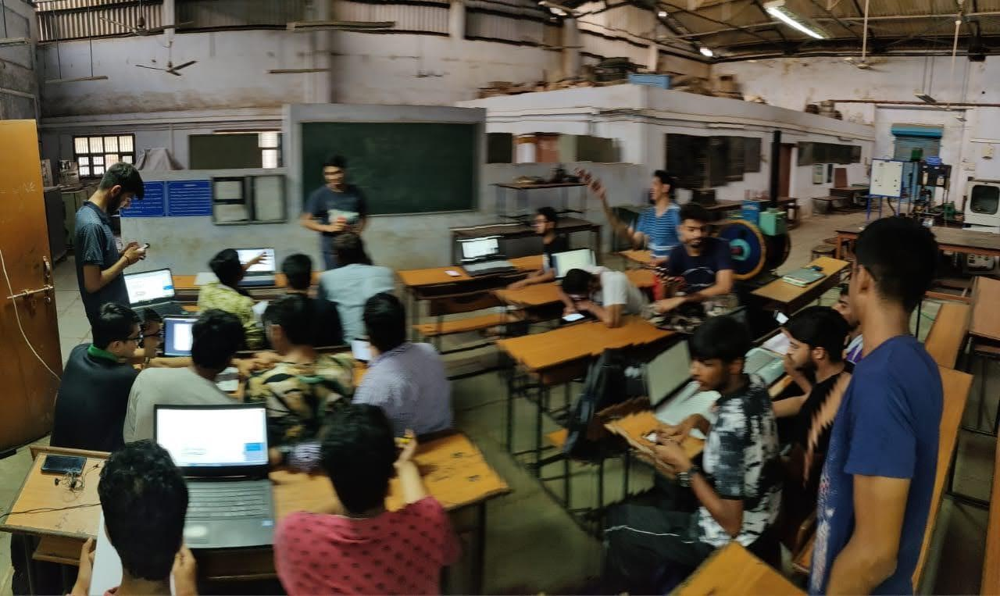
Hands-on session, Vadodara Hackathon 2.0 (2025)
Beyond the work
What keeps me going
Outside school and my projects, I like researching whatever topic has caught my curiosity that week. I read books on entrepreneurship, leadership and communication, because the ideas in them help me run projects and work with people.